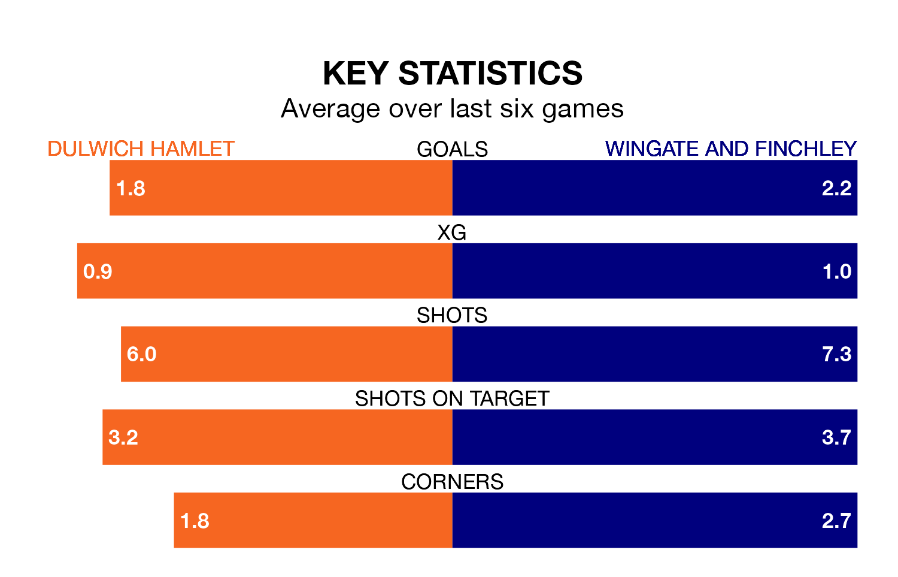

Wingate and Finchley travel to Dulwich Hamlet on late Tuesday in Isthmian Premier Division.
The visitors come into the game on the back of a defeat in their last match, having lost to Cray Wanderers 1-0 away.
Dulwich Hamlet, meanwhile, won their last match, 3-1 against Haringey Borough.
With 48 goals in 25 games so far this season, Wingate & Finchley are scoring more than average in the league with 1.9 goals per game. But they are conceding more than average too, letting in 44 goals at a rate of 1.8 per game.
Dulwich Hamlet are also above average scorers, with 1.8 goals per game, compared to a league average of 1.6. They have conceded 1.7 goals per game.
In the last 10 years, Dulwich Hamlet and Wingate & Finchley have played each other on 12 occasions. They won four each, and they drew four times.
On average, Dulwich Hamlet scored 1.6 goals and the Blues 1.8 in those matches.
Their last meeting was on October 24, when Dulwich Hamlet won 3-2 away.
The Blues are fifth in the table after 25 games, of which they have won 14 and drawn two, earning 44 points.
The hosts are six places behind the away side in 11th, with nine wins and nine draws putting them on 36 points.
Dulwich Hamlet are in reasonable form in Isthmian Premier Division, with three wins and two draws from their last six games.
With three wins and a draw over that period, Wingate & Finchley's form is slightly worse – they have taken 10 points from 18, compared to Dulwich Hamlet's 11.
Updated: 09:21 (UTC), 30/01/24